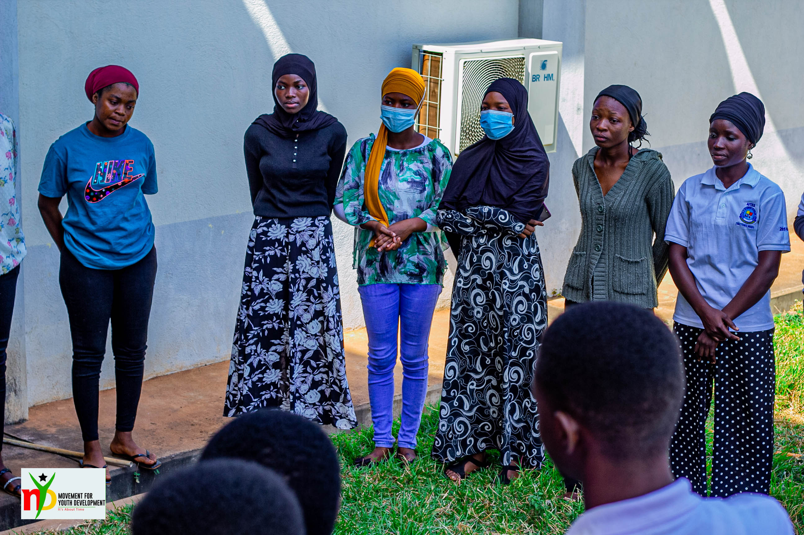

02 · Governance & Advocacy
Youth Voices
in the Room
Where Policy Happens.
The Meet-the-Mayor Youth Conference bridges the institutional gap between young citizens and local government — acknowledging youth not as subjects of policy, but as contributors to it.
100 delegates aged 18–35 engage directly with District Assembly Mayors. Thematic breakout sessions cover governance, peace and security, sexual health, entrepreneurship, and environmental protection. A formal Youth Manifesto is submitted as policy petition.
100
Delegates/conference
18–35
Age range targeted
5
Thematic sessions
Manifesto
Formal policy petition
Breakout Themes
Governance
Peace & Security
Sexual Health
Entrepreneurship
Environment